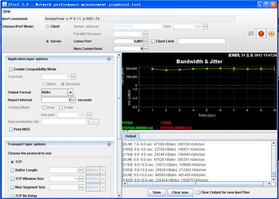
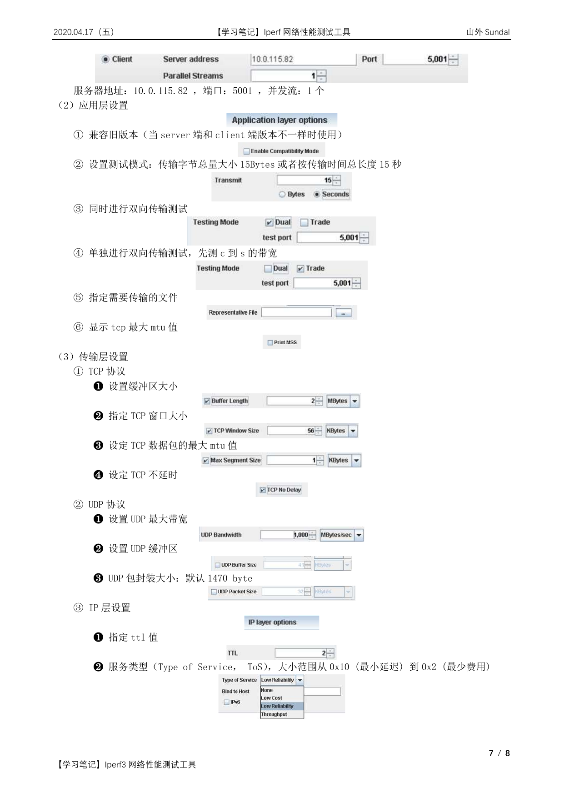

网络性能评估主要是监测网络带宽的使用率，将网络带宽利用最大化是保证网络性能的基础。但由于网络设计不合理、网络存在安全漏洞等原因，都会导致网络带宽利用率不高。要找到网络带宽利用率不高的原因，就需要对网络传输进行监控，此时就需要用到一些网络性能评估工具，而 Iperf 就是这样一款网络带宽测试工具。
Iperf 简介
什么是 iperf？
Iperf 是美国伊利诺斯大学（University of Illinois）开发的一种开源的网络性能测试工具，可以用来测试网络节点间（也包括回环）TCP 或 UDP 连接的性能，包括带宽、抖动以及丢包率。其中抖动和丢包率适用于 UDP 测试，而带宽测试适用于 TCP 和 UDP。
Iperf 是一款基于 TCP/IP 和 UDP/IP 的网络性能测试工具，可以用来测量网络带宽和网络质量，提供网络延迟抖动、数据包丢失率、最大传输单元等统计信息。网络管理员可以根据这些信息了解并判断网络性能问题，从而定位网络瓶颈，解决网络故障。
Iperf 是一款基于命令行模式的网络性能测试工具，是跨平台的，提供横跨 Windows、Linux、Mac 的全平台支持。iperf 全程使用内存作为发送/接收缓冲区，不受磁盘性能的影响，对于机器配置要求很低。不过由于是命令行工具，iperf 不支持输出测试图形。
Iperf 可以测试 TCP 和 UDP 带宽质量，具有多种参数和 UDP 特性，可以用来测试一些网络设备如路由器、防火墙、交换机等的性能。
Iperf 的功能
（1）TCP 方面
- 测量网络带宽
- 报告 MSS/MTU 值的大小和观测值
- 支持 TCP 窗口值通过套接字缓冲
- 当 P 线程或 Win32 线程可用时，支持多线程。客户端与服务端支持同时多重连接
（2）UDP 方面
- 客户端可以创建指定带宽的 UDP 流
- 测量丢包
- 测量延迟
- 支持多播
- 当 P 线程可用时，支持多线程。客户端与服务端支持同时多重连接（不支持 Windows）
（3）其他方面
- 在适当的地方，选项中可以使用 K（kilo-）和 M（mega-）。例如 131072 字节可以用 128K 代替
- 可以指定运行的总时间，甚至可以设置传输的数据总量
- 在报告中，为数据选用最合适的单位
- 服务器支持多重连接，而不是等待一个单线程测试
- 在指定时间间隔重复显示网络带宽、波动和丢包情况
- 服务器端可作为后台程序运行
- 服务器端可作为 Windows 服务运行
- 使用典型数据流来测试链接层压缩对于可用带宽的影响
Iperf 的安装
iperf 的版本
Iperf 有两种版本，Windows 版和 Linux 版本。
（1）Unix/Linux 版
更新比较快，版本最新，目前最新的版本是 iperf3.0。
Linux 版本下载地址：http://code.google.com/p/iperf/downloads/list
为了测试的准确性，尽量使用 Linux 环境测试。
（2）Windows 版
Windows 版 iperf 叫 jperf，或者 xjperf，更新慢，目前最新版本为 1.7（打包在 jperf 中）。
Windows 版本下载地址：http://sourceforge.net/projects/iperf/files/jperf/jperf%202.0.0/
jperf 是在 iperf 基础上开发的图形界面程序，简化了复杂命令行参数的构造，而且还能保存测试结果，同时实时图形化显示结果。
Windows 版 iperf 安装
对于 Windows 版的 iperf，下载安装包后直接解压，然后将解压出来的 iperf.exe 和 cygwin1.dll 复制到 %systemroot% 目录即可。
Linux 版 iperf 安装
（1）在线安装
# CentOS
yum install -y iperf3
# Debian / Ubuntu
apt-get install iperf3
（2）离线安装
gunzip -c iperf-<version>.tar.gz | tar -xvf -
cd iperf-<version>
./configure
make
make install
Iperf 的使用
Iperf 的工作模式
Iperf 可以运行在任何 IP 网络上，包括本地以太网、接入因特网、Wi-Fi 网络等。在工作模式上，iperf 运行于服务器、客户端模式下，其服务器端主要用于监听到达的测试请求，而客户端主要用于发起测试连接会话，因此要使用 iperf 至少需要两台服务器，一台运行在服务器模式下，另一台运行在客户端模式下。
在完成 iperf 安装后，执行 iperf3 -h 即可显示 iperf 的详细用法。iperf 的命令行选项共分为三类，分别是客户端与服务器端公用选项、服务器端专用选项和客户端专用选项。
Iperf 常用参数（测试够用）
| 参数 | 说明 |
|---|---|
-s, --server |
iperf 服务器模式，默认启动的监听端口为 5201，如：iperf -s |
-c, --client host |
iperf 客户端模式，host 是 server 端地址，如：iperf -c 222.35.11.23 |
-i, --interval |
指定每次报告之间的时间间隔，单位为秒，如：iperf3 -c 192.168.12.168 -i 2 |
-p, --port |
指定服务器端监听的端口或客户端所连接的端口，默认是 5001 端口 |
-u, --udp |
表示采用 UDP 协议发送报文，不带该参数表示采用 TCP 协议 |
-l, --len |
设置读写缓冲区的长度，单位为 Byte。TCP 方式默认为 8KB，UDP 方式默认为 1470 字节。通常测试 PPS 的时候该值为 16，测试 BPS 时该值为 1400 |
-b, --bandwidth [K|M|G] |
指定 UDP 模式使用的带宽，单位 bits/sec，默认值是 1 Mbit/sec |
-t, --time |
指定数据传输的总时间，即在指定的时间内，重复发送指定长度的数据包。默认 10 秒 |
-A |
CPU 亲和性，可以将具体的 iperf3 进程绑定对应编号的逻辑 CPU，避免 iperf 进程在不同的 CPU 间调度 |
通用参数（Server 端和 Client 端共用）
| 参数 | 说明 |
|---|---|
-f, --format [k|m|g|K|M|G] |
指定带宽输出单位，[k|m|g|K|M|G] 分别表示以 Kbits、Mbits、Gbits、KBytes、MBytes、GBytes 显示输出结果，默认 Mbits，如：iperf3 -c 192.168.12.168 -f M |
-p, --port |
指定服务器端监听的端口或客户端所连接的端口，默认是 5001 端口 |
-i, --interval |
指定每次报告之间的时间间隔，单位为秒，如：iperf3 -c 192.168.12.168 -i 2 |
-F |
指定文件作为数据流进行带宽测试，如：iperf3 -c 192.168.12.168 -F web-ixdba.tar.gz |
Server 端专用参数
| 参数 | 说明 |
|---|---|
-s, --server |
iperf 服务器模式，默认启动的监听端口为 5201，如：iperf -s |
-c, --client host |
如果 iperf 运行在服务器模式，并且用 -c 参数指定一个主机，那么 iperf 将只接受指定主机的连接。此参数不能工作于 UDP 模式 |
-D |
Unix 平台下将 Iperf 作为后台守护进程运行。在 Win32 平台下，Iperf 将作为服务运行 |
-R |
卸载 Iperf 服务（仅用于 Windows） |
-o |
重定向输出到指定文件（仅用于 Windows） |
-P, --parallel |
服务器关闭之前保持的连接数。默认是 0，这意味着永远接受连接 |
Client 端专用参数
| 参数 | 说明 |
|---|---|
-c, --client host |
iperf 客户端模式，host 是 server 端地址，如：iperf -c 222.35.11.23 |
-u, --udp |
表示采用 UDP 协议发送报文，不带该参数表示采用 TCP 协议 |
-b, --bandwidth [K|M|G] |
指定 UDP 模式使用的带宽，单位 bits/sec，默认值是 1 Mbit/sec |
-t, --time |
指定数据传输的总时间，即在指定的时间内，重复发送指定长度的数据包。默认 10 秒 |
-l, --len |
设置读写缓冲区的长度，单位为 Byte。TCP 默认为 8KB，UDP 默认为 1470 字节。通常测试 PPS 的时候该值为 16，测试 BPS 时该值为 1400 |
-n, --num [K|M|G] |
指定传输数据包的字节数，如：iperf3 -c 192.168.12.168 -n 100M |
-P, --parallel |
指定客户端与服务端之间使用的线程数。默认是 1 个线程。需要客户端与服务器端同时使用此参数 |
-w, --window |
指定套接字缓冲区大小，在 TCP 方式下，此设置为 TCP 窗口的大小。在 UDP 方式下，此设置为接受 UDP 数据包的缓冲区大小，用来限制可以接收数据包的最大值 |
-B, --bind |
用来绑定一个主机地址或接口，这个参数仅用于具有多个网络接口的主机。在 UDP 模式下，此参数用于绑定和加入一个多播组 |
-M, --mss |
设置 TCP 最大信息段的值 |
-N, --nodelay |
设置 TCP 无延时 |
-V |
绑定一个 IPv6 地址 |
-d, --dualtest |
运行双测试模式。将使服务器端反向连接到客户端，使用 -L 参数中指定的端口（或默认使用客户端连接到服务器端的端口）。使用参数 -r 以运行交互模式 |
-L, --listenport |
指定服务端反向连接到客户端时使用的端口。默认使用客户端连接至服务端的端口 |
-r, --tradeoff |
往复测试模式。当客户端到服务器端的测试结束时，服务器端反向连接至客户端。当客户端连接终止时，反向连接随即开始。如果需要同时进行双向测试，请尝试 -d 参数 |
其他参数
| 参数 | 说明 |
|---|---|
-h, --help |
显示命令行参考并退出 |
-v, --version |
显示版本信息和编译信息并退出 |
iperf3 -h
# Usage: iperf3 [-s|-c host] [options]
# iperf3 [-h|--help] [-v|--version]
Iperf 使用实例
环境准备
- Server 端 IP 地址：192.168.0.120
- Client 端 IP 地址：192.168.0.121
测试 TCP 吞吐量
（1）Server 端开启 iperf 的服务器模式，指定 TCP 端口
[root@iperf-server ~]# iperf3 -s -i 1 -p 520
------------------------------------------------------------
Server listening on TCP port 520
TCP window size: 85.3 KByte (default)
------------------------------------------------------------
（2）Client 端启动 iperf 的客户端模式，连接服务端
[root@iperf-client ~]# iperf -c 192.168.0.120 -i 1 -t 60 -p 520
------------------------------------------------------------
Client connecting to 192.168.0.120, TCP port 520
TCP window size: 45.0 KByte (default)
------------------------------------------------------------
[ 3] local 192.168.0.121 port 50616 connected with 192.168.0.120 port 520
[ ID] Interval Transfer Bandwidth
[ 3] 0.0-10.1 sec 1.27 GBytes 1.08 Gbits/sec
（3）Server 端监听结果
------------------------------------------------------------
Server listening on TCP port 5001
TCP window size: 85.3 KByte (default)
------------------------------------------------------------
[ 4] local 192.168.0.120 port 520 connected with 192.168.0.121 port 50616
[ ID] Interval Transfer Bandwidth
[ 4] 0.0-10.1 sec 1.27 GBytes 1.08 Gbits/sec
输出字段说明：
- Interval：时间间隔
- Transfer：时间间隔里面传输的数据量
- Bandwidth：时间间隔里的传输速率
（4）测试多线程 TCP 吞吐量
如果没有指定发送方式，iPerf 客户端只会使用单线程。
iperf3 -c 192.168.0.120 -P 30 -t 60
（5）进行上下行带宽测试（双向传输）
iperf3 -c 192.168.0.120 -d -t 60
（6）其他建议
- 建议在 Server 端执行
sar命令来统计实际收到的包并作为实际结果：sar -n DEV 1 320 - 要停止 iperf3 服务进程，请按
Ctrl+Z或Ctrl+C
测试 UDP 吞吐量
带宽测试通常采用 UDP 模式，因为能测出极限带宽、时延抖动、丢包率。在进行测试时，首先以链路理论带宽作为数据发送速率进行测试，例如，从客户端到服务器之间的链路的理论带宽为 100Mbps，先用 -b 100M 进行测试，然后根据测试结果（包括实际带宽、时延抖动和丢包率），再以实际带宽作为数据发送速率进行测试，会发现时延抖动和丢包率比第一次好很多，重复测试几次，就能得出稳定的实际带宽。
（1）Server 端开启 iperf 的服务器模式，指定 UDP 端口
[root@iperf-server ~]# iperf3 -s -i 1 -p 521
------------------------------------------------------------
Server listening on port 521
------------------------------------------------------------
（2）Client 端启动 iperf 的客户端模式，连接服务端
[root@iperf-client ~]# iperf3 -u -c 192.168.0.120 -b 100m -t 60 -p 521
------------------------------------------------------------
Client connecting to 192.168.0.120, port 521
------------------------------------------------------------
[ 3] local 192.168.0.121 port 50616 connected with 192.168.0.120 port 521
[ ID] Interval Transfer Bandwidth TotalDatagrams
[ 3] 0.0-10.1 sec 1.27 GBytes 1.08 Gbits/sec 82
（3）Server 端监听结果
------------------------------------------------------------
Server listening on port 521
------------------------------------------------------------
[ 4] local 192.168.0.120 port 520 connected with 192.168.0.121 port 50616
[ ID] Interval Transfer Bandwidth Jitter Lost/Total Datagrams
[ 4] 0.0-10.1 sec 1.27 GBytes 1.08 Gbits/sec 0.007 ms 0/82 (0%)
输出字段说明：
- Jitter：抖动，在连续传输中的平滑平均值差
- Lost：丢包数量
- Total Datagrams：包数量
（4）测试多线程 UDP 吞吐量
iperf3 -u -c 192.168.1.1 -b 5M -P 30 -t 60
（5）进行上下行带宽测试（双向传输）
iperf3 -u -c 192.168.1.1 -b 100M -d -t 60
Jperf 介绍
Jperf 简介
jperf 是基于 iperf 开发的图形界面程序，简化了复杂命令行参数的构造，而且还能够保存测试结果，同时实时图形化显示结果。JPerf 可以测试 TCP 和 UDP 带宽质量，可以测量最大 TCP 带宽，具有多种参数和 UDP 特性，可以报告带宽、延迟抖动和数据包丢失。
JPerf2.0 运行环境
- 操作系统：Java 运行环境
- 网络要求：Jperf 可以在任何 IP 网络上运行，包括本地以太网、因特网接入连接和 Wi-Fi 网络
- 其他要求：JPerf 必须安装两个组件：JPerf 服务器和 JPerf 客户端
JPerf2.0 页面介绍


（1）Iperf 命令行（无法直接输入）
服务端设置：
- 监听端口：5001
- Client limit：客户端限制，仅允许指定客户端连接
- Num Connections：最大允许连接的数量，为 0 不限制
客户端设置：
- 服务器地址：10.0.115.82，端口：5001，并发流：1 个
（2）应用层设置
- 兼容旧版本（当 server 端和 client 端版本不一样时使用）
- 设置测试模式：传输字节总量大小 15 Bytes 或者按传输时间总长度 15 秒
- 同时进行双向传输测试
- 单独进行双向传输测试，先测 c 到 s 的带宽
- 指定需要传输的文件
- 显示 TCP 最大 MTU 值
（3）传输层设置
TCP 协议：
- 设置缓冲区大小
- 指定 TCP 窗口大小
- 设定 TCP 数据包的最大 MTU 值
- 设定 TCP 不延时
UDP 协议：
- 设置 UDP 最大带宽
- 设置 UDP 缓冲区
- UDP 包封装大小：默认 1470 byte
IP 层设置：
- 指定 TTL 值
- 服务类型（Type of Service，ToS），大小范围从 0x10（最小延迟）到 0x2（最少费用）
参考资料
- 《网络性能测试方法》 — 阿里云帮助文档
- 《iperf - 百度百科》
- 《Linux 网络性能评估工具 iperf、CHARIOT 测试网络吞吐量》 — Konglingbin
- 《Linux 命令大全 - iperf 命令》
- 《网络性能测试工具 iPerf 功能与使用教程》
- 《iPerf 图形化工具 Jperf 图文使用教程》
- 《使用 iPerf 进行网络吞吐量测试》 — 放开那个电扇